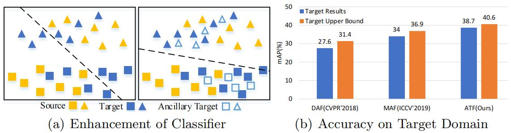
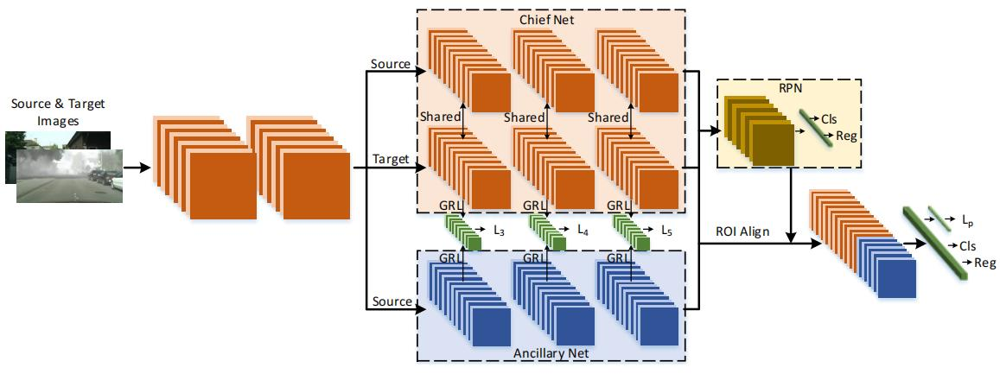
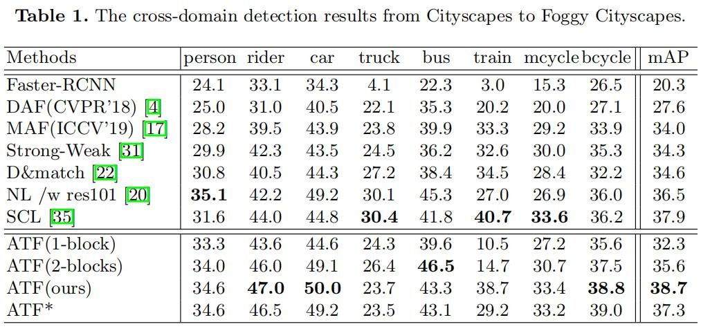

域适应：ATF¶
综述¶
会议时间：European Conference on Computer Vision 2020 (ECCV 20)
论文地址：https://www.ecva.net/papers/eccv_2020/papers_ECCV/papers/123690307.pdf
源码地址：https://github.com/He-Zhenwei/ATF
针对领域：域适应目标检测
主要思想¶
随着无监督领域自适应技术的发展，通过将知识从语义相关的源域迁移到目标域来减轻领域偏移问题成为了可能，目前大多数跨域模型都是使用迁移学习的思想来学习领域不变的特征(domain invariant features)，即对于不同领域的图片，让特征提取器得到域不变的特征表示，进一步使源域数据和目标域数据产生足够的混淆，从而让检测器具有域不变的特性。但强制使特征具有域不变的特性会不可避免地扭曲原始数据的特征分布，从而破坏两个领域之间的结构性区别特征(structural discrimination)（类内紧密性(compactness)和类间可区分性(separability)）。
上述类似的问题同样发生在跨域目标检测中，模型的训练只能依靠具有标签的源域数据和不具有标签的目标域数据，因此所学的源域特征具有区别性和可靠性，而目标域的特征常常是脆弱并且不可靠的。大多数现有的模型（如DA Faster、SW Faster）默认源域数据和目标域数据的训练共享同一个网络，但是强制将可靠的源域特征向不可靠的目标域特征进行对齐可能会增加源域特征崩溃的风险，并且最终恶化模型对图片结构性区别特征的提取能力，进一步影响检测器的预测，换句话说当只用带有标签的源域训练网络时，网络在标签的监督下，可以提取源域数据区别性明显的特征，但当引入无标签的目标域数据时，为了降低目标域数据的域分类损失，模型可能会以牺牲提取源域数据特征的能力为代价，从而混淆模型对源域数据的检测。域适应理论(论文链接)表明，目标域的风险\epsilon_T(h)的上限由源域风险\epsilon_S(h)、领域差异d_A以及两个域理想参数h^*之间的共享误差\lambda=\epsilon_T(h^*)+\epsilon_S(h^*)构成，以往的算法大多专注于降低d_A来提升模型在目标域的检测性能，忽略了源风险\epsilon_S(h)增加引起的负面影响。综上有效地控制源风险\epsilon_S(h)，避免源域特征崩溃对于域自适应检测器性能的提升尤为重要。
本文提出了一种不对称的三路结构(Asymmetric Tri-way structure)，用于增强Faster RCNN的可转移性，因此又叫ATF结构。该模型主要由两个模块构成——主网络和辅助网络。辅助网络仅由带有标签的源域数据训练，并且和主网络参数独立，因此这种不对称性可以很大程度上避免源崩溃和领域转移时的特征失真。作者的模型倾向于保留源域特征的区分性，同时引导目标特征的结构转移。

方法¶
为了方便起见，将带有标签的源域数据表示为D_s=\{(x^s_i,b^s_i,y^s_I)\}^{n_S}_i，其中x_i^s表示图片，b_i^s表示对应的边界框信息，y^s_i表示类别标签，n_s表示样本数量；没有标签的目标域数据表示为D_t=\{(x_i^t)\}_i^{n_t}，其中n_t表示样本的数量。任务总体目标为将语义知识从D_s转移到D_t，从而使模型可以成功地检测源域数据。
网络结构¶
ATF模型主要基于Faster RCNN检测框架，具体结构如下图所示：

图片传入网络时首先经过两个卷积块，之后会有三个分支，前两个橙色分支称为主网络，并且两个分支共享同一组参数。从源域数据和目标域数据得到的特征依次传入前两个分支。第三个蓝色的分支称为辅助网络，参数与主网络的参数相互独立，只在训练阶段将源域数据得到的特征传入辅助网络。网络结构中三个分支共同使用同一个RPN模块，之后将得到的提议区域(proposals)传入ROI Align层来汇集所有的特征，最后再根据所得的特征得到检测结果。
与传统的域适应目标检测算法一样，在训练阶段还引入了对抗学习策略，通过在主网和辅助网络之间建立域分类器来对齐领域之间的特征分布，从而提高模型的域适应能力。网络整体损失由两部分构成：①主网目标域分支以及辅助网络中的领域对抗混淆损失(Dac)，利用领域标签监督，用于约束领域差异d_A；②主网源域分支以及辅助网络中的检测损失(Det)，利用源域图像边界框标签监督，用于约束源域风险\epsilon_S(h)。
主网原理¶
领域差异是导致跨域目标检测器性能下降的首要因素，和以往的算法类似，为了降低差异d_A，作者引入了领域对抗混淆机制，在主网络(目标知识)和辅助网络(源知识)之间架起一座桥梁。为了让辅助网络中的特征分布和主网络中目标域分支的特征分布类似，作者引入了图像级特征对齐（全局）和实例级特征对齐（局部），这里与DA Faster中类似。
全局领域对齐：全局对齐在网络中指导低水平卷积块上的特征对齐，假设主网络和辅助网络中第k^{th}个卷积块依次表示为F_c(x^t_i,\theta^k_c)和F_a(x^s_i,\theta^k_a)，其中\theta^k_c和\theta^k_a表示对应卷积块的参数，假设二元领域标签表示为d，对于源于数据d=1，对于目标域数据d=0，第k个卷积块的全局领域对齐损失可以表示为：
局部领域对齐：为了进一步对齐局部实例级跨域特征，作者又引入了实例级领域判别器。经过ROI-Align汇集的特征代表图像的局部部分，包括前景与背景，假设辅助网络的Pooling特征表示为f_a，主网络的特征表示为f_c，局部领域对齐损失可以表示为：
辅助网络原理¶
如上文所讨论，设立辅助网络最主要的目的就是进一步约束源域风险\epsilon_S。由于源域中每个图片都有对应的对象类别和边界框信息标签，因此单独训练源域数据的话，源域风险\epsilon_S可以降到最低（受到分类损失和回归损失的约束），但目标域数据没有标签信息来约束，而主网络中两个分支的参数是共享的，因此主网络中对应的源域分支容易受到目标域数据的负面影响。对此，作者单独设置了辅助网络，用于独立地约束源域风险，并且在实验中，主网络的检测损失将被重新用于辅助网络的监控。
综上所述，辅助网络被训练以生成与主网络目标域分支具有相似分布的特征，并且辅助网络还通过领域对抗损失来调整由主网络目标域分支学习到的特征，通过对齐两个网络之间的特征分布，来使主网络适应源域数据训练的检测器，换句话说，领域对抗损失相当于主网络和辅助网络之间的联系，辅助网络通过该联系来指导主网络特征提取能力的学习，调整主网络提取到的特征，进一步调整主网络的判定边界。同时，辅助网络还受到源检测器中分类损失和回归损失的限制，使其对源域数据可以提取区分度较高的特征。因此，通过域对齐和源风险最小化，用于域适应目标检测任务的期望风险可以有效地被限制。注意，在测试过程中，目标域图像不经过辅助网络，只经过主网络，只利用主网络对物体的类别和坐标信息进行预测。
训练损失¶
非对称三路Faster-RCNN(ATF)网络的优化主要由两个损失函数来完成，基于源域数据的检测损失和领域对齐损失，主网络和辅助网络的检测损失可以表示为：
mAP对比¶
Cityscape \rightarrow FoggyCityscape

总结¶
本文提出了一种非对称三路网络来解决无监督域适应目标检测中参数共享引起的源域特征失控问题，主要就是在网络中新加入了一个由源域标签监督训练的辅助网络，该网络参数和主网络参数相互独立。模型主要有两大贡献：①在参数共享的网络中，域差异难以消除，因此提出了非对称的网络结构来增强检测器的训练，这种不对称性可以很好地缓解源域和目标域之间标记不公平所带来的问题；②所提出的辅助网络使得源域特征分布可以保持结构区分性，很大程度上提高了目标域特征的可靠性。
注：以上内容仅是笔者的个人观点，若有错误，欢迎大家批评指正。
初步完稿：2022年3月20日